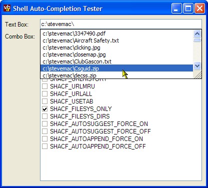

AutoComplete Control Code (21K)
AutoComplete Control Code (21K)
 4 Mar 2003
4 Mar 2003
First Posted

Auto-File and URL Completion for Text Boxes and Combo Boxes
Add Shell file or URL auto-complete for better UIs
Version 5 of the Shell, shipped with Windows 2000 and ME or above, provides the ability to add Auto-Complete to any Text Box. This sample provides two simple extensions to the TextBox and ComboBox classes to add AutoComplete to your application.
Shell AutoCompletion
There are two variants to the Auto-Completion facilities provided with version 5 of the Windows Shell. The simple method, presented here, provides a hardcoded auto-completion list based on either files, directories or URLs on the system. A more sophisticated technique which will be the basis for a future article is to implement the COM IEnumString, IAutoComplete and IAutoComplete2 interfaces, which allows you to specify arbitrary auto-complete strings.
Note that if you plan to target older systems, such as NT4 or Win 98/SE, you should enclose any attempt to initialise Auto-Complete in a Try - Catch block since the call is not supported.
Using the simple version of the Auto-Complete method is very straightforward. The shell exposes an API call, SHAutoComplete, which takes a handle to a the TextBox to start auto-completing on, and a flag parameter which specifies which type of auto-completion should be applied.
Here's the code for the extended Text Box which provides auto-completion:
using System;
using System.Windows.Forms;
using System.Runtime.InteropServices;
namespace vbAccelerator.Controls.TextBox
{
///
/// Adds Shell File System and URL AutoCompletion facilities to
/// a text box
///
public class AutoCompleteTextBox : System.Windows.Forms.TextBox
{
#region Unmanaged Code
[Flags]
public enum SHAutoCompleteFlags : uint
{
SHACF_DEFAULT = 0x0,
SHACF_FILESYSTEM = 0x1,
SHACF_URLHISTORY = 0x2,
SHACF_URLMRU = 0x4,
SHACF_USETAB = 0x8,
SHACF_URLALL = (SHACF_URLHISTORY | SHACF_URLMRU),
SHACF_FILESYS_ONLY = 0x10,
SHACF_FILESYS_DIRS = 0x20,
SHACF_AUTOSUGGEST_FORCE_ON = 0x10000000,
SHACF_AUTOSUGGEST_FORCE_OFF = 0x20000000,
SHACF_AUTOAPPEND_FORCE_ON = 0x40000000,
SHACF_AUTOAPPEND_FORCE_OFF = 0x80000000
}
[DllImport("shlwapi.dll")]
private static extern int SHAutoComplete (
IntPtr hwndEdit,
AutoCompleteTextBox.SHAutoCompleteFlags dwFlags );
#endregion
#region Member Variables
private AutoCompleteTextBox.SHAutoCompleteFlags autoCompleteFlags =
SHAutoCompleteFlags.SHACF_FILESYS_ONLY;
private bool flagsSet = false;
private bool handleCreated = false;
#endregion
#region Implementation
///
/// Gets/sets the flags controlling automcompletion for the
/// text box
///
public AutoCompleteTextBox.SHAutoCompleteFlags AutoCompleteFlags
{
get
{
return this.autoCompleteFlags;
}
set
{
this.autoCompleteFlags = value;
this.flagsSet = true;
if (handleCreated)
{
SetAutoComplete();
}
}
}
protected override void OnHandleCreated ( System.EventArgs e )
{
// call this first as SHAutoComplete may not be supported
// on the OS
base.OnHandleCreated(e);
// don't do anything if we're in design mode:
if (!this.DesignMode)
{
// remember we've created the handle for any future
// get/ set
handleCreated = true;
// if we've provided some flags then start autocompletion:
if (flagsSet)
{
SetAutoComplete();
}
}
}
private void SetAutoComplete()
{
SHAutoComplete(this.Handle, this.autoCompleteFlags);
}
///
/// Constructs an auto-complete capable text box but
/// does not automatically start auto-completion.
///
public AutoCompleteTextBox() : base()
{
}
///
/// Constructs an auto-complete capable text box and
/// starts auto-completion with the specified flags.
///
/// Flags controlling
/// auto-completion
public AutoCompleteTextBox(
AutoCompleteTextBox.SHAutoCompleteFlags autoCompleteFlags
) : this()
{
// Handle will not be available at this point; we need
// to wait for HandleCreated:
this.autoCompleteFlags = autoCompleteFlags;
this.flagsSet = true;
}
#endregion
}
}
AutoCompletion and ComboBoxes
Using the function with a ComboBox isn't much more difficult; all you need to do is to find the handle to the TextBox within the ComboBox itself and call the SHAutoComplete API on that. Some versions of Windows (XP) provide a message you can use to get the handle to the TextBox, however, it is just as simple to use the Windows FindWindowEx API call to get the handle, and this works regardless of the type of ComboBox or OS version. The code to do this is as follows:
using System.Runtime.InteropServices;
[DllImport("user32.dll", CharSet = CharSet.Auto)]
private static extern IntPtr FindWindowEx (
IntPtr hWnd1,
IntPtr hWnd2,
[MarshalAs(UnmanagedType.LPTStr)] string lpsz1,
IntPtr lpsz2);
...
IntPtr textHandle = FindWindowEx(
comboHandle,
IntPtr.Zero,
"EDIT",
IntPtr.Zero);